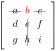

Section 6.1 Finding the Determinant
In this section we will define a function that assigns to each square matrix \(A\) a scalar output called the determinant of \(A\). We will denote the determinant of \(A\) by \(\det{A}\text{.}\) For a matrix with real number entries, the output of the determinant function will always be a real number.
One important property of the determinant is its connection to matrix inverses. We will find that a matrix \(A\) is singular if and only if \(\det{A}=0\text{.}\) For nonsingular matrices, we will establish a formula that gives the inverse of a matrix exclusively in terms of determinants. This property will be addressed in detail during the final sections of the chapter.
Subsection 6.1.1 Cofactor Expansion Along the Top Row
To start from the beginning, let us define the determinant of a \(1\times 1\) matrix.
Definition 6.1.1.
Let \(A=\begin{bmatrix}a\end{bmatrix}\text{.}\) Define the determinant of \(A\) by \(\det{A}=a\text{.}\)
It is important to note that this definition is consistent with our goal of making a connection between determinants and invertibility. Observe that
\(A^{-1}=\begin{bmatrix}a^{-1}\end{bmatrix}\) exists if and only if
\(a\neq 0\text{.}\) Now we proceed to
\(2\times 2\) matrices. According to
Formula 3.2.11, the inverse of a nonsingular matrix
\begin{equation*}
A=\begin{bmatrix}a\amp b\\c\amp d\end{bmatrix}
\end{equation*}
is given by
\begin{equation*}
A^{-1}=\frac{1}{ad-bc}\begin{bmatrix}d\amp -b\\-c\amp a\end{bmatrix}.
\end{equation*}
Observe that \(A^{-1}\) exists if and only if \(ad-bc\neq 0\text{.}\) We will call the number \(ad-bc\) the determinant of \(A\text{.}\)
Definition 6.1.2.
Let \(A=\begin{bmatrix}a\amp b\\c\amp d\end{bmatrix}\text{.}\) The determinant of \(A\) is defined by
\begin{equation}
\det{A}=\det{\begin{bmatrix}a\amp b\\c\amp d\end{bmatrix}}=\begin{vmatrix}a\amp b\\c\amp d\end{vmatrix}=ad-bc.\tag{6.1.1}
\end{equation}
Note the distinction between the square bracket notation associated with the matrix
\begin{equation*}
\begin{bmatrix}a\amp b\\c\amp d\end{bmatrix}
\end{equation*}
and the vertical bar notation
\begin{equation*}
\begin{vmatrix}a\amp b\\c\amp d\end{vmatrix}
\end{equation*}
used to denote the determinant in expression
(6.1.1).
For the sake of practice, here are two small examples using these formulas.
Example 6.1.3.
\begin{equation*}
\det{\begin{bmatrix}1\amp 2\\3\amp 4\end{bmatrix}}=\begin{vmatrix}1\amp 2\\3\amp 4\end{vmatrix}=(1)(4)-(2)(3)=-2.
\end{equation*}
The easiest way to understand the definition of the determinant for a \(3\times 3\) matrix is to start with an example.
Example 6.1.4.
Find \(\det{A}\) if
\begin{equation*}
A=\begin{bmatrix}3\amp -2\amp 1\\5\amp -1\amp 2\\1\amp 4\amp 1\end{bmatrix}.
\end{equation*}
Answer.
\begin{align*}
\det{A}\amp =(3)\begin{vmatrix}-1\amp 2\\4\amp 1\end{vmatrix}-(-2)\begin{vmatrix}5\amp 2\\1\amp 1\end{vmatrix}+(1)\begin{vmatrix}5\amp -1\\1\amp 4\end{vmatrix} \\
\amp =(3)(-1-8)-(-2)(5-2)+(1)(20+1) \\
\amp =-27+6+21 \\
\amp =0.
\end{align*}
Definition 6.1.5.
Let
\begin{equation*}
A=\begin{bmatrix}a\amp b\amp c\\d\amp e\amp f\\g\amp h\amp i\end{bmatrix}.
\end{equation*}
The determinant of \(A\) is given by
\begin{equation}
\det{A}=|A|=a\begin{vmatrix}e\amp f\\h\amp i\end{vmatrix}-b\begin{vmatrix}d\amp f\\g\amp i\end{vmatrix}+c\begin{vmatrix}d\amp e\\g\amp h\end{vmatrix}.\tag{6.1.2}
\end{equation}
We will now reiterate several important features of this definition and introduce some vocabulary:
The coefficients \(a\text{,}\) \(b\) and \(c\) are the entries of the first row of matrix \(A\text{.}\) Coefficients in the formula follow an alternating sign pattern: \(+a\text{,}\) \(-b\text{,}\) \(+c\text{.}\) This pattern will persist in the determinant formulas for determinants of larger matrices.
-
When using
(6.1.2), we compute determinants of three matrices:
\begin{equation*}
\begin{bmatrix}e\amp f\\h\amp i\end{bmatrix},\quad \begin{bmatrix}d\amp f\\g\amp i\end{bmatrix},\quad \begin{bmatrix}d\amp e\\g\amp h\end{bmatrix}.
\end{equation*}
These matrices are called minor matrices. To form each minor matrix, cross out the row and column that the corresponding coefficient is in. For example, the minor matrix corresponding to coefficient \(b\) is found by crossing out the row and column that \(b\) is in.

The process for finding the determinant described in
Definition 6.1.5 is referred to as a
cofactor expansion along the top row.
A few more elaborate examples will be helpful for this newfound technique.
Example 6.1.6.
Find \(\det{A}\) if
\begin{equation*}
A=\begin{bmatrix}4\amp 3\amp -2\\1\amp -5\amp 3\\-4\amp 1\amp 1\end{bmatrix}.
\end{equation*}
Answer.
\begin{equation*}
\det{A}=(4)\begin{vmatrix}-5\amp 3\\1\amp 1\end{vmatrix}-(3)\begin{vmatrix}1\amp 3\\-4\amp 1\end{vmatrix}+(-2)\begin{vmatrix}1\amp -5\\-4\amp 1\end{vmatrix}.
=-33
\end{equation*}
We are starting to observe a certain pattern in the process of computing the determinant. This pattern will persist for larger matrices. Let’s take a look at a \(4\times 4\) matrix.
Example 6.1.7.
Find \(\det{A}\) if
\begin{equation*}
A=\begin{bmatrix} 2 \amp 3 \amp -2 \amp -5\\0 \amp 1\amp -2\amp 0\\1\amp 3 \amp 0 \amp -1\\2\amp 0\amp 1\amp 1\end{bmatrix}.
\end{equation*}
Answer.
As you watch the video below, pay particular attention to the same patterns as you saw in the case of \(3\times 3\) matrices: the alternating sign pattern and the process of forming minor matrices.
\begin{align*}
\det{A}
\amp =2\begin{vmatrix}1\amp -2\amp 0\\3 \amp 0 \amp -1\\0\amp 1\amp 1\end{vmatrix}-3\begin{vmatrix}0 \amp -2\amp 0\\1 \amp 0 \amp -1\\2\amp 1\amp 1\end{vmatrix}-2\begin{vmatrix}0 \amp 1\amp 0\\1\amp 3 \amp -1\\2\amp 0\amp 1\end{vmatrix}-(-5)\begin{vmatrix}0 \amp 1\amp -2\\1\amp 3 \amp 0 \\2\amp 0\amp 1\end{vmatrix} \\
\amp =2(7)-3(6)-2(-3)+5(11) \\
\amp =57
\end{align*}
Example 6.1.8.
Find \(\det{A}\) if
\begin{equation*}
A=\begin{bmatrix}4\amp -1\amp 2\amp 1\\3\amp 0\amp 1\amp -2\\
2\amp 1\amp 5\amp 1\\-2\amp 1\amp 3\amp -1\end{bmatrix}.
\end{equation*}
Answer.
We will use the entries in the top row as coefficients in front of \(3\times 3\) determinants. As before, we will use the alternating sign pattern for the coefficients:
\begin{equation*}
+(4), -(-1), +(2), -(1).
\end{equation*}
Just like in the case of a
\(3 \times 3\) matrix in
Example 6.1.4, each of the smaller determinants is obtained by crossing out the row and the column where the coefficient is located.
\begin{align*}
\det{A}
\amp =4\begin{vmatrix}0\amp 1\amp -2\\1\amp 5\amp 1\\1\amp 3\amp -1\end{vmatrix}+\begin{vmatrix}3\amp 1\amp -2\\2\amp 5\amp 1\\-2\amp 3\amp -1\end{vmatrix}+2\begin{vmatrix}3\amp 0\amp -2\\2\amp 1\amp 1\\-2\amp 1\amp -1\end{vmatrix}-\begin{vmatrix}3\amp 0\amp 1\\2\amp 1\amp 5\\-2\amp 1\amp 3\end{vmatrix}\\
\amp =4(6)+(-56)+2(-14)-(-2) \\
\amp =-58
\end{align*}
Subsection 6.1.2 Cofactor Expansion Along the First Column
We defined the determinant of a matrix in terms of cofactor expansion along the top row. We will now see what happens when we expand along the first column instead. We will refer to this process as cofactor expansion along the first column. Surprisingly, both expansions yield the same result.
Example 6.1.9.
Let
\begin{equation*}
A=\begin{bmatrix}3\amp -2\amp 1\\5\amp -1\amp 2\\1\amp 4\amp 1\end{bmatrix}.
\end{equation*}
In
Example 6.1.4 we found that
\(\det{A}=0\text{.}\) Let’s try to mimic what we did earlier, but instead of expanding along the first row, we will expand along the fist column.
\begin{align*}
\amp (3)\begin{vmatrix}-1\amp 2\\4\amp 1\end{vmatrix}-(5)\begin{vmatrix}-2\amp 1\\4\amp 1\end{vmatrix}+(1)\begin{vmatrix}-2\amp 1\\-1\amp 2\end{vmatrix} \\
\amp =(3)(-1-8)-(5)(-2-4)+(1)(-4+1) \\
\amp =-27+30-3 \\
\amp =0 \\
\amp =\det{A}.
\end{align*}
Let’s go through this process again for a larger matrix.
Exploration 6.1.1.
Let
\begin{equation*}
A=\begin{bmatrix}4\amp -1\amp 2\amp 1\\3\amp 0\amp 1\amp -2\\
2\amp 1\amp 5\amp 1\\-2\amp 1\amp 3\amp -1\end{bmatrix}.
\end{equation*}
In
Example 6.1.8 we found that
\(\det{A}=-58\text{.}\) We will now try to expand along the fist column. When computing determinants of the four
\(3\times 3\) matrices below, try different approaches. You might want to expand along the first row for some of them, and along the first column for others. Looking for where zeros are located will help you decide what to try.
\begin{align*}
\amp 4\begin{vmatrix}0\amp 1\amp -2\\1\amp 5\amp 1\\1\amp 3\amp -1\end{vmatrix}-3\begin{vmatrix}-1\amp 2\amp 1\\1\amp 5\amp 1\\1\amp 3\amp -1\end{vmatrix}+2\begin{vmatrix}-1\amp 2\amp 1\\0\amp 1\amp -2\\1\amp 3\amp -1\end{vmatrix}-(-2)\begin{vmatrix}-1\amp 2\amp 1\\0\amp 1\amp -2\\1\amp 5\amp 1\end{vmatrix} \\
\amp =4(6)-3(10)+2(-10)+2(-16) \\
\amp =-58 \\
\amp =\det{A}.
\end{align*}
In
Example 6.1.9 and
Exploration 6.1.1 we were careful not to claim at the outset that we were finding the determinant of the matrix by cofactor expansion along the first column; we merely observed that the resulting value was equal to the determinant. Therefore the determinant of a matrix can be defined in terms of cofactor expansion along the first row or column.
Subsection 6.1.3 Cofactor Expansion Along Any Row or Column
We originally defined the determinant of a matrix via expansion along the top row of the matrix. We later observed that expansion along the first column produces the same result. It turns out that the value of the determinant can be computed by expanding along any row or column. This result is known as the Laplace Expansion Theorem.
When expanding along an arbitrary row or column, we will continue to follow the two patterns we observed earlier.
To illustrate this, let’s take another look at matrix
\(A\) from
Example 6.1.8.
Example 6.1.10.
Let
\begin{equation*}
A=\begin{bmatrix}4\amp -1\amp 2\amp 1\\3\amp 0\amp 1\amp -2\\
2\amp 1\amp 5\amp 1\\-2\amp 1\amp 3\amp -1\end{bmatrix}.
\end{equation*}
Follow the rules described above to expand along the second row. Compare your result with the determinant you found in
Example 6.1.8.
Answer.
The second row has the advantage over other rows in that it contains a zero. This will simplify our calculations. Following the checkerboard sign pattern along the second row we get
\begin{align*}
\det{A}
\amp =-3\begin{vmatrix}-1\amp 2\amp 1\\1\amp 5\amp 1\\1\amp 3\amp -1\end{vmatrix}-\begin{vmatrix}4\amp -1\amp 1\\2\amp 1\amp 1\\-2\amp 1\amp -1\end{vmatrix}+(-2)\begin{vmatrix}4\amp -1\amp 2\\2\amp 1\amp 5\\-2\amp 1\amp 3\end{vmatrix} \\
\amp =-3(10)-(-4)-2(16) \\
\amp =-58.
\end{align*}
This answer is the same as the answer we got using expansion along the first row in
Example 6.1.8.
It is clear that having zeros as entries in the matrix reduces the number of computations necessary to find the determinant. The following example demonstrates how to use zeros to our advantage.
Example 6.1.11.
Find \(\det{A}\) if
\begin{equation*}
A=\begin{bmatrix}4\amp 0\amp 0\amp 0\amp 2\\0\amp -1\amp 1\amp 0\amp 0\\2\amp 0\amp 0\amp -5\amp 3\\0\amp 1\amp 4\amp 0\amp -1\\1\amp 1\amp 5\amp 0\amp 0\end{bmatrix}.
\end{equation*}
Answer.
The fourth column contains the most zeros, so we will expand along that column. The \((3, 4)\)-entry is the only non-zero entry in the fourth column. Following the checkerboard pattern, we see that the sign in front of \(-5\) is a minus.
\begin{equation*}
\det{A}=-(-5)\begin{vmatrix}4\amp 0\amp 0\amp 2\\0\amp -1\amp 1\amp 0\\0\amp 1\amp 4\amp -1\\1\amp 1\amp 5\amp 0\end{vmatrix}.
\end{equation*}
Next we will expand the minor matrix along the top row.
\begin{equation*}
\det{A}=5\left(4\begin{vmatrix}-1\amp 1\amp 0\\1\amp 4\amp -1\\1\amp 5\amp 0\end{vmatrix}-2\begin{vmatrix}0\amp -1\amp 1\\0\amp 1\amp 4\amp \\1\amp 1\amp 5\end{vmatrix}\right).
\end{equation*}
Try the next step on your own. We suggest that you expand the first matrix along the last column and expand the second matrix along the first column.
\begin{equation*}
\det(A)=5\big(4(-6)-2(-5)\big)=-70.
\end{equation*}
Subsection 6.1.4 A Note on Equivalency
We initially introduced the determinant of a matrix via cofactor expansion along the top row. We later observed that cofactor expansion along any row or column produces the same result. We have to be careful, however, not to use a few examples as ``proof" that all cofactor expansions are equivalent. Such claims need to be carefully supported with general proofs. Unfortunately, in this case, the proofs are tedious and conceptually unenlightening. An interested reader can find them in later sections.
Subsection 6.1.5 Determinants of Some Special Matrices
We know that we can find the determinant of a matrix by cofactor expansion along the top row or the first column. This property gives rise to a useful result.
Theorem 6.1.12.
Let \(A\) be a square matrix, then
\begin{equation*}
\det{A^T}=\det{A}.
\end{equation*}
Proof.
As we observed earlier, having zeros in a matrix makes it easier for us to compute its determinant. Recall that that a square matrix is upper-triangular if all of the entries below the main diagonal are zero. Similarly, a square matrix is called lower-triangular if all of the entries above the main diagonal are zero. Together, upper and lower triangular matrices are categorized as triangular matrices.
Theorem 6.1.13.
If \(A\) is a triangular matrix, then \(\det{A}\) is equal to the product of its diagonal entries.
Proof.
We proceed by induction on \(n\text{,}\) where \(A\) is an \(n\times n\) matrix. It is easy to see that this result holds for \(n=1, 2\text{.}\) Suppose that the result holds for \((n-1)\times (n-1)\) triangular matrices. We need to show that it holds for \(n\times n\) triangular matrices.
Suppose \(A=[a_{ij}]\) is a triangular matrix. Then, with the exception of \(a_{11}\text{,}\) the entries in the first row (or column) of \(A\) are guaranteed to be zeros. We will take advantage of these zeros and expand along the first row (or column) of \(A\text{.}\) As we do so, we obtain a single product of \(a_{11}\) and the determinant of a minor matrix obtained by crossing out the first row and column of \(A\text{.}\) But this minor \((n-1)\times (n-1)\) matrix is also a triangular matrix with diagonal etries \(a_{22}, a_{33},\ldots, a_{nn}\text{.}\) By induction hypothesis, its determinant is equal to the product of its diagonal entries, \(a_{22}\cdot a_{33}\cdot\ldots\cdot a_{nn}\text{.}\) Therefore
\begin{equation*}
\det{A}=a_{11}(a_{22}\cdot a_{33}\cdot\ldots\cdot a_{nn}).
\end{equation*}
This completes the proof.
As an immediate consequence of this theorem, we have the following result.
Corollary 6.1.14.
Let \(I\) be the identity matrix, then
\begin{equation*}
\det{I}=1.
\end{equation*}
Matrices of the form
\begin{equation*}
\begin{bmatrix}A \amp C\\O\amp B\end{bmatrix} \quad \text{and} \quad \begin{bmatrix}A \amp O\\D\amp B\end{bmatrix},\text{,}
\end{equation*}
where \(A\text{,}\) \(B\) are square matrices and \(O\) is the zero matrix, are said to be block triangular. The following theorem makes it easy to compute determinants of such matrices.
Theorem 6.1.15.
Consider block triangular matrices
\begin{equation*}
\begin{bmatrix}A \amp C\\O\amp B\end{bmatrix} \quad \text{and} \quad \begin{bmatrix}A \amp O\\D\amp B\end{bmatrix},
\end{equation*}
where \(A\) and \(B\) are square matrices. Then
\begin{equation*}
\det{\begin{bmatrix}A \amp C\\O\amp B\end{bmatrix}}=\det{A}\det{B}\quad\mbox{and}\quad\det{\begin{bmatrix}A \amp O\\D\amp B\end{bmatrix}}=\det{A}\det{B}
\end{equation*}
Proof.
Write
\begin{equation*}
T=\begin{bmatrix}A \amp C\\O\amp B\end{bmatrix}
\end{equation*}
and proceed by induction on \(k\text{,}\) where \(A\) is \(k\times k\text{.}\) If \(k=1\text{,}\) then the result follows from cofactor expansion along the first column. In general, let \(S_i(T)\) denote the matrix obtained from \(T\) by deleting row \(i\) and column 1. Then the cofactor expansion along the first column is
\begin{equation*}
\det{T}=a_{11}\det{S_1(T)}-a_{21}\det{S_2(T)}+\dots + (-1)^{k+1}\det{S_k(T)}
\end{equation*}
where \(a_{11}, a_{21},\dots , a_{k1}\) are the entries in the first column of \(A\text{.}\) Observe that
\begin{equation*}
S_i(T)=\begin{bmatrix}S_i(A) \amp C_i\\O\amp B\end{bmatrix}
\end{equation*}
where \(i=1,2,\dots , k\text{,}\) \(S_i(A)\) denotes matrix \(A\) with column 1 and row \(i\) deleted, and \(C_i\) denotes matrix \(C\) with with row \(i\) deleted. Since \(S_i(A)\) is a \((k-1)\times (k-1)\) matrix, by the induction hypothesis,
\begin{equation*}
\det{S_i(T)}=\det{S_i(A)}\cdot \det{B}
\end{equation*}
This gives us
\begin{align*}
\det{T}=\amp a_{11}\det{S_1(T)}-a_{21}\det{S_2(T)}+\dots + (-1)^{k+1}a_{k1}\det{S_k(T)} \\
=\amp a_{11}\det{S_1(A)}\cdot\det{B}-a_{21}\det{S_2(A)}\cdot\det{B}+\dots \\
\amp \dots+ (-1)^{k+1}a_{k1}\det{S_k(A)}\cdot\det{B} \\
=\amp \Big(a_{11}\det{S_1(A)}-a_{21}\det{S_2(A)}+\dots + (-1)^{k+1}a_{k1}\det{S_k(A)}\Big)\det{B} \\
=\amp \det{A}\det{B}.
\end{align*}
The lower triangular case is similar.
Here is a final example prior to giving exercises.
Example 6.1.16.
Find \(\det{A}\) if
\begin{equation*}
A=\begin{bmatrix}2\amp 1\amp 3\amp 3\\1\amp -1\amp -2\amp 1\\0\amp 0\amp 1\amp 1\\0\amp 0\amp 4\amp 1\end{bmatrix}.
\end{equation*}
Answer.
\begin{equation*}
\begin{vmatrix}2\amp 1\amp 3\amp 3\\1\amp -1\amp -2\amp 1\\0\amp 0\amp 1\amp 1\\0\amp 0\amp 4\amp 1\end{vmatrix}=\begin{vmatrix}2\amp 1\\1\amp -1\end{vmatrix}\begin{vmatrix}1\amp 1\\4\amp 1\end{vmatrix}=9.
\end{equation*}
Exercises 6.1.6 Exercises
Exercise Group.
Find the determinant of each matrix.
1.
\begin{equation*}
A=\begin{bmatrix}4\amp -2\\3\amp 7\end{bmatrix}.
\end{equation*}
Answer.
\begin{equation*}
\det{A}=34.
\end{equation*}
2.
\begin{equation*}
B=\begin{bmatrix}5\amp -1\amp 0\\0\amp 3\amp -2\\1\amp -1\amp 2\end{bmatrix}.
\end{equation*}
Answer.
\begin{equation*}
\text{det}(B)=22.
\end{equation*}
3.
\begin{equation*}
C=\begin{bmatrix}1\amp -2\amp 0\amp 0\amp 0\\0\amp -4\amp 1\amp 1\amp 0\\3\amp 0\amp -1\amp 0\amp 1\\0\amp 0\amp 4\amp 1\amp 0\\-1\amp -2\amp 0\amp 0\amp 0\end{bmatrix}.
\end{equation*}
Answer.
\begin{equation*}
\det(C)=12.
\end{equation*}
4.
5.
Let
\(B'\) be a matrix obtained from
\(B\) of
Exercise 6.1.6.2 by switching the first and the second row of
\(B\text{.}\) Compute the determinant of
\(B'\text{.}\) What do you observe?
6.
Make a conjecture about what happens to the determinant of a matrix if two rows of a matrix are switched. Prove your conjecture for a \(2\times 2\) matrix.
7.
Let
\(B'\) be a matrix obtained from
\(B\) of
Exercise 6.1.6.2 by multiplying the middle row by
\(-3\text{.}\) Compute the determinant of
\(B'\text{.}\) What do you observe?
8.
Make a conjecture about what happens to the determinant of a matrix if one of the rows is multiplied by a constant. Prove your conjecture for a \(2\times 2\) matrix.
9.
Let
\(B'\) be a matrix obtained from
\(B\) of
Exercise 6.1.6.2 by multiplying
\(B\) by
\(2\text{.}\) Compute the determinant of
\(B'\text{.}\) What do you observe?
10.
Make a conjecture about what happens to the determinant of a matrix if the matrix is multiplied by a constant. Prove your conjecture for a \(2\times 2\) matrix.
11.
Let
\(B'\) be a matrix obtained from
\(B\) of
Exercise 6.1.6.2 by adding twice the third row to the first. Compute the determinant of
\(B'\text{.}\) What do you observe?
12.
Make a conjecture about what happens to the determinant of a matrix if a multiple of one row is added to another row. Prove your conjecture for a \(2\times 2\) matrix.
13.
Is it true that \(\det{(A+B)}=\det{A}+\det{B}\text{?}\)